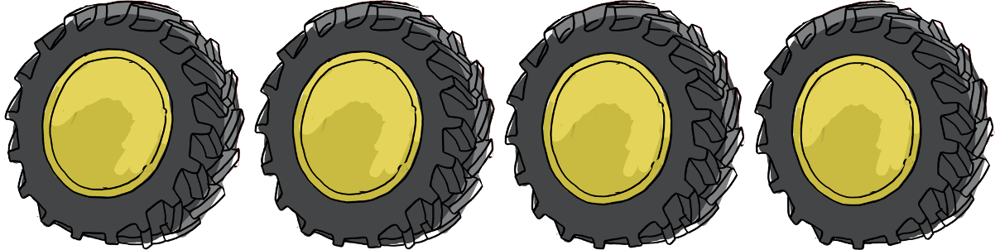
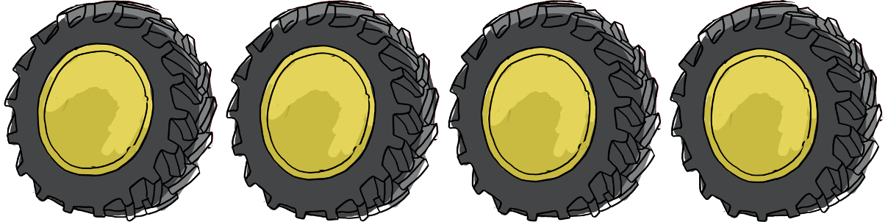
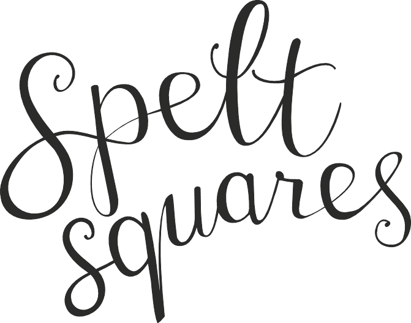

Our story
Hi there! We’re Herman and Freddy, our friends call us the Farm Brothers.
We grew up as carefree rascals on the family farm. We were up with the roosters, drove tractors with grandpa through the fields and always helped harvest crops and plant trees. We never wore watches because back then time didn’t matter, gathering around the fireplace to tell stories, that’s what mattered. We loved helping mom in the kitchen (ok, she calls it “making a mess”) and learning all about the fresh fruits and vegetables that were a staple in our home. We never imagined life anywhere else.
Our inquiring minds and free spirits did eventually lead us away from the countryside. Life was exciting and busy, but we never stopped missing the simplicity and purity of homemade, organic food from the farm. We realized that our new friends with their fast-paced lives were missing out on the benefits of fueling their bodies with GOOD
FOOD. So we decided to do something about it.
It was time to Share the Good Stuff
with them…and now with you!
Freddy
+ Herman
The four
we stand for:
 Squares">
Spelt is one of the oldest grains on the planet. It is high in fibre and low in gluten. It has never been genetically modified, making its trace amounts of gluten water soluble and easy for our bodies to digest.
As it should be!
Spelt is an excellent source of vital vitamins and nutrients including magnesium, iron, zinc, vitamin B2 and thiamin.
Spelt releases energy slowly which controls blood sugar, cholesterol and appetite.
All this Good Stuff, plus our secret recipe, make Spelt Squares the smartest and most delicious choice for snacking.
Our Spelt Squares are:
Organic, 100% spelt, wheat-free, veggie friendly, low fat and free of artificial colours, additives, preservatives or flavours